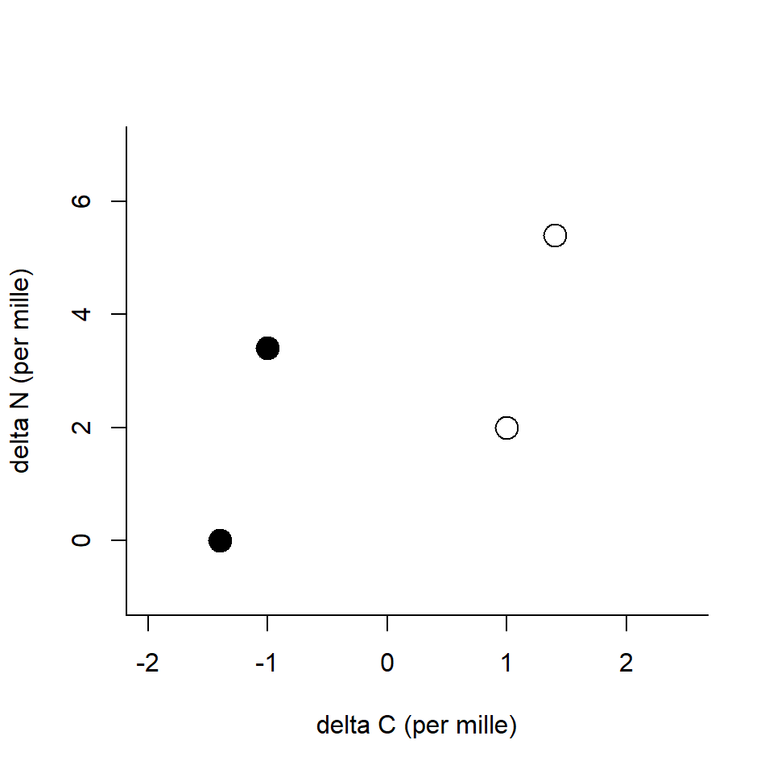

Trophic interactions
BIO605 FA20
Predator-prey interaction
Predator-prey interactions are prevalent

The building block
Predator-prey interactions are the building blocks of a food web and affect community stability
- Links are species specific (e.g., specialist or generalist)
- Differ in strength (strong and weak interactions)
Predator
- Carnivore
- Herbivore
- Omnivore
They take a variety of predation tactics (active, ambush hunting, etc.)
Prey
- Behavioral avoidance
- Predator satiation (e.g., synchronized emergence)
- Mechanical
- Chemical
- Mimicry
Prey adopt a variety of anti-predator tactics
Prey adaptation
The front door
The back door
Predator-prey model
The model
Lotka-Volterra predator-prey model
Let \(x\) and \(y\) be prey and predator density
\[ \frac{dx}{dt} = rx - cxy\\ \frac{dy}{dt} = b(cxy) - dy \]
Prey dynamics
Lotka-Volterra predator-prey model
\[ \frac{dx}{dt} = rx - cxy\\ \]
The term \(rx\) represents the population growth of the prey
- \(r\) is the intrinsic population growth rate
Prey dynamics
Lotka-Volterra predator-prey model
\[ \frac{dx}{dt} = rx - cxy\\ \]
The term \(cxy\) represents the predator-prey interaction
- \(xy\) is proportional to the frequency of prey and predator meet
- \(c\) is the rate of predation if they happen to meet
Predator dynamics
Lotka-Volterra predator-prey model
\[ \frac{dy}{dt} = b(cxy) - dy \]
The term \(b(cxy)\) represents the population growth of the predator
- predator population growth depends on prey density \(x\)
- \(b\) is the birth rate or efficiency that predators convert prey to reproduction
Predator dynamics
Lotka-Volterra predator-prey model
\[ \frac{dy}{dt} = b(cxy) - dy \]
The term \(dy\) represents the death rate of the predator
- \(d\) is the death rate
Prediction
Population cycle
Food web complexity
Food webs are more complex in nature
- Predators eat multiple prey species
- Interaction strength differs
- and more…
Food web complexity and stability
Does food web complexity incease community stability?
Pimm’s work (1980) looked at if a species deletion causes futher species loss in the system
Pimm 1980, Oikos
Sample food webs
Which of the following is more sensitive to the basal species deletion?
Sample food webs
Which of the following is more sensitive to the top predator deletion?


Complexity destabilizes the system
General conclusion is greater complexity (connectance or number of species) destabilizes the system
Complexity destabilizes the system
Opposing effects of complexity
- Complexity increases the stability against the basal species removal
- Complexity decreases the stability against the predator removal
1 < 2 - as a result, complexity decreases the overall stability
Food web complexity
There are many studies exploring the stability-complexity relationship
- May’s paradox (May 1974, Stability and Complexity in Model Ecosystems)
- Develop a random food web (interactions are randomly drawn)
- Analyze the relationship between community stability* and complexity
- Food web complexity destabilizes the food web
*the maximum eigenvalue of the community interaction matrix
Food web complexity
The following properties can reverse the stability-complexity relationship
- Dominance of weak interactions (McCann et al. 1998 Nature)
- Adaptive foraging (Kondoh 2003, Science)
- Mutualistic interactions (Mougi and Kondoh 2012, Science)
Field studies: diet estimate
How do we study predator prey interactions?
Direct survey
Dissect the stomach and see what’s in there
- High resolution
- Reflect short-term diet
- Time consuming
How do we study predator prey interactions?
Dissect…identify all the species…measure their volume…and…
Bellmore 2013, Ecological Applications
Stable isotopes
Alternative approach is the use of stable isotopes
The same atomic # (proton), but different neutron #
Carbon \(^{12}C\), \(^{13}C\) and nitrogen \(^{14}N\), \(^{15}N\)
- \(^{12}C\) 98.89%, \(^{13}C\) 1.11%
- \(^{14}N\) 99.63%, \(^{15}N\) 0.37%
Delta expression
Stable istopes are expressed in \(\delta\) values
carbon example:
\[ \delta ^{13}C (\unicode{x2030}) = 1000(\frac{R_{sample}}{R_{standard}} - 1) \]
where \(R = \frac{^{13}C}{^{12}C}\)
Fractionation
Predator cannot convert all the prey into their body tissues - predators lose some through metabolic processes
- respiration
- urine, feces
Excrete lighter isotopes first, then heavier
The ratio in predators differs from that in prey
Fractionation
The change in \(\delta\) values through predator-prey interactions is referred to as trophic enrichment factor* (TEF)
Carbon: \(0.4 \pm 1.3 \unicode{x2030}\)
Nitrogen: \(3.4 \pm 1.0 \unicode{x2030}\)
Carbon may reflect the basal resources, while nitrogen may reflect the vertical position in a food web
Post 2002, Ecology 83: 703-718
*there are other names…
Fractionation
Two sources
Again, predators eat multiple prey items…
How stable isotopes help ditinguish their contributions to the diet?
Two sources
Think caborn isotopes only
\[ \begin{align} \delta ^{13}C (\unicode{x2030}) &= 3.0 = Y &&\text{Predator}\\ \delta ^{13}C (\unicode{x2030}) &= 1.0 = X_1 &&\text{Prey 1}\\ \delta ^{13}C (\unicode{x2030}) &= 3.0 = X_2 &&\text{Prey 2}\\ \end{align} \]
Two sources
Make up \(Y\) with \(X_1\) and \(X_2\)
\[ \begin{align} Y &= \alpha (X_1 + 0.4) + (1-\alpha) (X_2 + 0.4)\\ &\text{where}\\ Y &= 3.0, X_1 = 1.0, and ~ X_2 = 3.0 \end{align} \]
Calculate \(\alpha\)
\(\alpha = ...\)
Mixing model
\(Y\) is the weighted mean of \(X_1\) and \(X_2\)
(\(\alpha\) is the proportional contribution of \(X_1\))
This is the basis of mixing model

Mixing model
General formula
\[ \begin{align} \delta_{j,predator} &= \sum^n_{i=1} \alpha_{i}(\delta_{j,i} + \Delta_j)\\ 1 &= \sum^n_{i=1} \alpha_{i} \end{align} \]
- \(i\) is the prey indicator (1, 2, …, n)
- \(j\) is the element indicator (carbon, nitrogen,…)
Mixing model
Different types of mixing models
- IsoSource\(^1\) (the basic model)
- MixSIR\(^2\) (prior, uncertainties in TEF)
- SIAR\(^3\) (prior, uncertainties in TEF)
- IsoWeb\(^4\) (whole food web analysis)
\(^1\)Phillips and Gregg 2003, Oecologia
\(^2\)Moore and Semmens 2008, Ecology Letters
\(^3\)Parnell et al. 2010, Plos one
\(^4\)Kadoya et al. 2012, Plos one
bold: Bayesian implmentation
Caution
- Low resolution (think if \(X_1\) and \(X_2\) values are very close)
- Reflect long-term diet (turnover time vaies by taxa)
Comparison
Stomach content
- High resolution
- Short-term
- Time consuming
Stable isotope
- Low resolution
- Long-term
- Less time consuming
- Tricky modeling
Field studies: niche width
Alternative
One drawback of stable isotopes is the low resolution
However, stable isotope ratios provide the integrated measures of a food web
- Niche width
- Food chain length
Niche width
Niche can be defined in a variety of ways
- habitat
- physiology
- food
- …
Stable isotopes can be used as a composite measure of variation in resource use among individuals
Variation in stable isotope signatures
Recall: carbon may reflect the basal resources, while nitrogen may reflect the vertical position in a food web
*Points represent isotope signatures of individuals
Variation in stable isotope signatures
Recall: carbon may reflect the basal resources, while nitrogen may reflect the vertical position in a food web
Layman et al. 2007 Ecology Letters
Variation in stable isotope signatures
Recall: carbon may reflect the basal resources, while nitrogen may reflect the vertical position in a food web
Layman et al. 2007 Ecology Letters
Tottabetsu river
Tottabetsu River, Japan

Ground beetles
Ground beetle - generalist predator
Brachinus stenoderus
 Lithochlaenius noguchii
Lithochlaenius noguchii
R exercise: install SIAR
Install siar & tidyverse packages
Call packages in the current R session
This will add additional functions to R
functions in packages must be called through library() everytime you open a new R session; otherwise you’ll get error messages
R exercise: read data
Download sample_data.csv and read it into R
## site date species d13C d15N
## 1 tottabetsu 6/9/2014 grasshopper -28.03 -0.04
## 2 tottabetsu 6/9/2014 grasshopper -27.86 2.53
## 3 tottabetsu 6/9/2014 grasshopper -28.18 0.99
## 4 tottabetsu 6/9/2014 grasshopper -28.24 0.81
## 5 tottabetsu 8/9/2014 grasshopper -26.94 0.23
## 6 tottabetsu 8/9/2014 grasshopper -27.92 1.65R exercise: data formatting
Check species column
## [1] "grasshopper" "L_noguchii" "B_stenoderus"R exercise: data formatting
Filter rows
## [1] "L_noguchii"## [1] "B_stenoderus"R exercise: convex hull
Calculate convex hull with convexhull
x carbon data
y nitrogen data
R exercise: covex hull
Inspect L. noguchii
## $TA
## [,1]
## [1,] 12.95555
##
## $xcoords
## [1] -22.10 -25.40 -26.92 -27.46 -25.50 -24.85 -22.23 -22.10
##
## $ycoords
## [1] 4.32 3.05 4.39 5.13 7.03 6.85 5.57 4.32
##
## $ind
## [1] 18 29 39 37 5 38 1 18R exercise: covex hull
Inspect B. stenoderus
## $TA
## [,1]
## [1,] 12.545
##
## $xcoords
## [1] -23.97 -22.94 -27.38 -27.80 -27.33 -26.76 -23.97
##
## $ycoords
## [1] 6.24 4.25 4.52 5.57 8.63 8.47 6.24
##
## $ind
## [1] 18 4 30 33 25 21 18R exercise: visualize
Visualize the convex hulls
# set plot region
plot(0, type = "n",
xlim = range(dat_ln$d13C, dat_bs$d13C),
ylim = range(dat_ln$d15N, dat_bs$d15N),
ylab = "delta N", xlab = "delta C")
# for L.noguchii
points(d15N ~ d13C, data = dat_ln, pch = 19) # add points
polygon(estln$xcoords, estln$ycoords) # draw polygon
# for B.stenoderus
points(d15N ~ d13C, data = dat_bs, pch = 21,
col = NA, bg = grey(0, 0.2)) # add points
polygon(estbs$xcoords, estbs$ycoords,
col = grey(0, 0.2), border = grey(0, 0.5)) # draw polygon